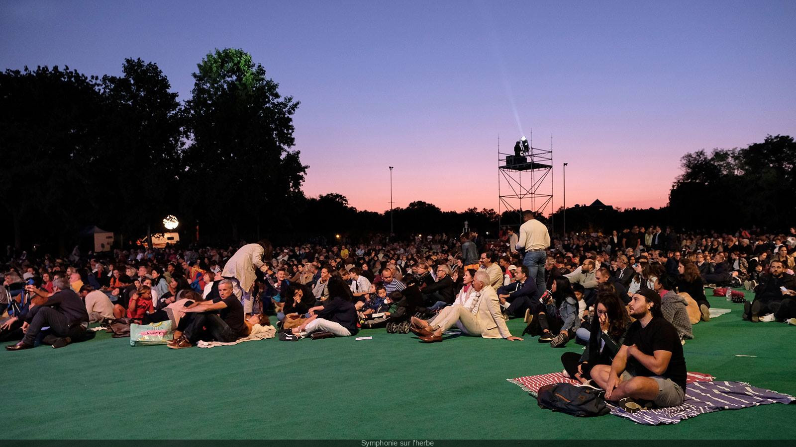

En effet nous présentons dans notre site un générateur de titre aléatoire qui peut vous donner des titres précis de musiques si vous n'avez pas envie d'en chercher dans les albums d'artistes mis à disposition dans la page classiques. Mais il y a aussi un carroussel dans la page concerts qui présente des videos de concerts que nous avons bien aimées, il ne s'agit pas de concerts entiers mais d'extraits où il n'y a qu'une ou deux musiques. Notre but est de vous montrer un aperçu de la performance que peut faire un artiste en public car nous pouvons redécouvrir des musiques en concert puisqu'elles ne sonnent pas du tout comme sur une platforme de streaming.
Notre équipe fait tout son possible pour garder un site actif avec les dernières sorties musicales. Chaque semaine la mosaïque d'albums est remplacée par d'autres albums en fonction de l'époque. Nous ajouterons des albums plus festifs et joyeux en été et des chansons moins dansantes pendant les autres saisons. N'ayez crainte ! Les albums les moins connus reviendront très souvent pour mettre l'artiste en avant. Ensuite, chaque jour seront ajoutés des titres à notre générateur aléatoire pour vous faire découvrir de nouveaux horizons musicaux